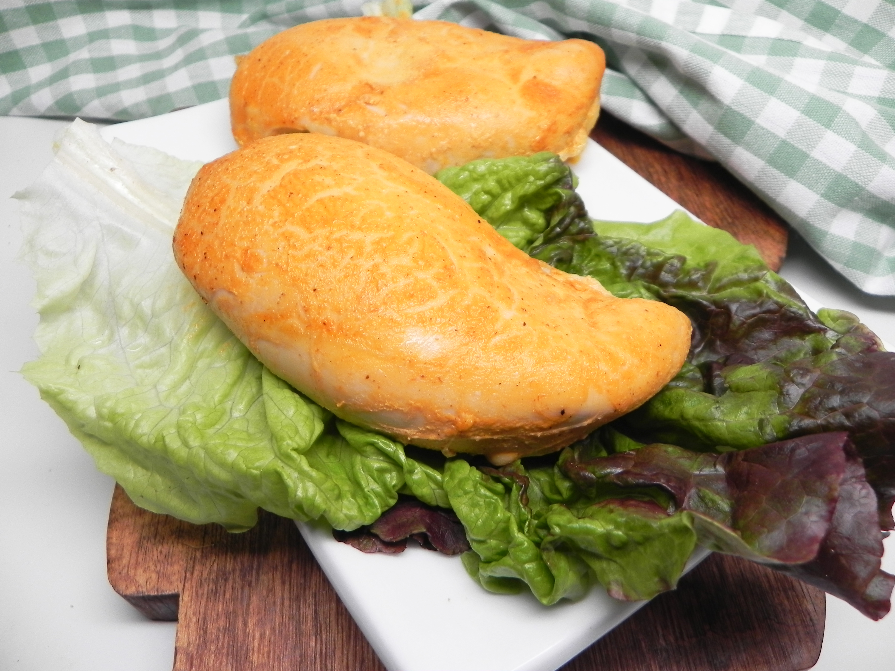

Spicy Buttermilk Baked Chicken

Dish Description
An alternative to breaded fried chicken!
Ingredients Used
- 2 cups buttermilk
- 2 cups Buffalo Wing Sauce (such as Frank's)
- 2 tablespoons Dijon mustard
- 1 clove garlic, minced
- 1/2 teaspoon salt
- 1/4 teaspoon ground black pepper
- 4 skinless, boneless chicken breast halves
- cooking spray
Cooking Steps
- Whisk buttermilk, Buffalo sauce, mustard, garlic, salt, and pepper together in a shallow bowl. Add chicken. Cover and marinate in the refrigerator for 12 to 24 hours.
- Preheat the oven to 375 degrees F(190 degrees C). Grease a 9x13-inch baking dish.
- Pour chicken and marinade into the prepared baking dish.
- Bake in the preheated oven until juices run clear, about 40 minutes. An instant-read thermometer inserted into the center should read at least 165 degrees F(74 degrees C).